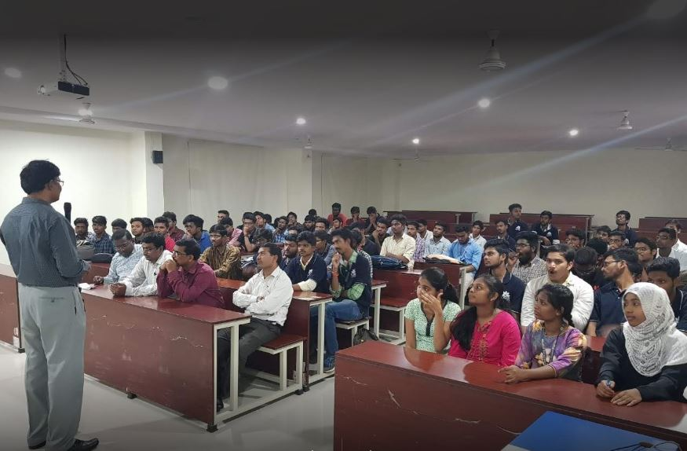
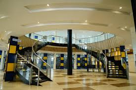
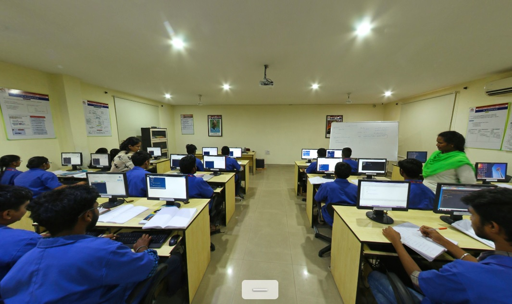
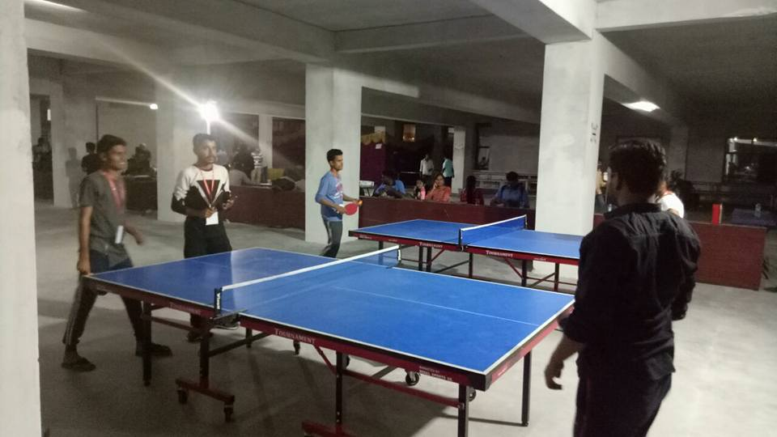
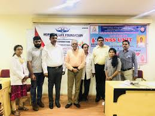

Facilities at CMR College of Engineering
Academic Facilities
The academic facilities at CMR College of Engineering include modern classrooms equipped with the latest technology, well-resourced laboratories for hands-on learning, and spacious lecture halls designed for interactive teaching. Students have access to specialized labs tailored for various engineering disciplines, fostering an innovative learning environment. The college also offers study spaces and collaborative areas to enhance group work and research activities. Overall, these facilities aim to provide students with a comprehensive educational experience.
Library
TThe library at CMR College of Engineering is a comprehensive resource center that houses a vast collection of books, journals, and digital materials to support students' academic needs. It provides a quiet and conducive environment for study and research, equipped with study spaces and reading areas. The library also offers access to online databases and e-resources, facilitating easy retrieval of information. Regular workshops and training sessions are conducted to help students make the most of these resources..
Computer Labs
The computer labs at CMR College of Engineering are state-of-the-art facilities designed to enhance practical learning and technical skills. Equipped with the latest hardware and software, these labs support a wide range of engineering applications and programming languages. Students have access to high-speed internet and specialized tools for research and projects, fostering an environment of innovation. Regular workshops and hands-on sessions ensure that students gain valuable experience in real-world scenarios, preparing them for industry demands.
Sports Facilities
CMR College of Engineering offers a diverse range of sports facilities to promote physical fitness and teamwork among students. The campus features well-maintained outdoor fields for sports like cricket and football, as well as indoor courts for basketball and badminton. A fully equipped gymnasium provides resources for strength training and fitness activities. Regular sports events and competitions encourage student participation and foster a spirit of healthy competition.
Health Services
CMR College of Engineering provides comprehensive health services to ensure the well-being of its students. The on-campus health center offers medical consultations, first aid, and emergency care, staffed by qualified healthcare professionals. Regular health check-ups and wellness programs are organized to promote a healthy lifestyle among students. Additionally, mental health support and counseling services are available to address psychological well-being and stress management..